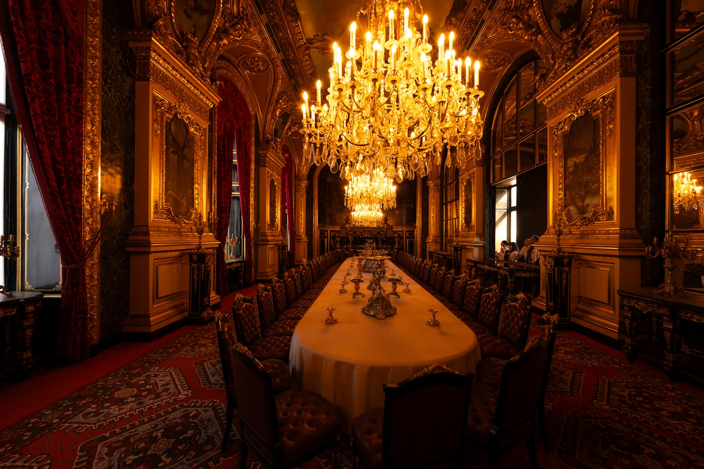

解決された世界 — 労働なき楽園の目的問題
ビル・ゲイツとイーロン・マスクは、ほぼ同じ問いを、ほぼ同じ言葉で、それぞれ別の場所で口にしている。
2024年5月、Bill Gatesはポッドキャストでサム・アルトマンと対談した際、こう言った。「AIがほとんどの仕事をできるようになったとき、目的意識（sense of purpose）はどう変わるのか。この質問は、もはや技術の問題ではなく哲学の問題になる」。同じ時期、Elon MuskはCNBCのインタビューで、「もし仕事が選択的なものになったら、意味の問題（the problem of meaning）は深刻な課題になる。人が何のために朝起きるのか、誰にもわからなくなる」と語った。この二人が同じ問いに到達したこと自体が、時代の位相を示している。AGIの議論は「できるかどうか」から「できた後どうするか」へ地滑り的に移動した。
本稿は、Nick BostromのDeep Utopia: Life and Meaning in a Solved World（Ideapress, 2024）を一次資料として、この目的問題を取り扱う。BostromはSuperintelligence（2014）で「我々はAIを安全に作れるか」を問うた人物だ。その10年後、彼は正反対の問いを出した。「AIが安全に作れて、あらゆる労働が不要になり、身体と精神の可塑性まで手に入れたとき、人間は何をするのか」。書名にあるdeep utopia（深い楽園）とは、物質的な欠乏が消えるだけの浅い楽園ではなく、目的そのものが奪われる深度の楽園を指す。
この問いは先送りできる問いに見える。AGIが来るのは10年後かもしれない、50年後かもしれない、永久に来ないかもしれない。しかし産業爆発のシナリオが部分的にでも成立したとき、問われるのは物質的な再分配よりも先に、人が何のために生きるかという一段下の層だ。Bostromの議論は、来るかもしれない未来への備えであり、同時に、すでに一部の富裕層で起きている「目的の蒸発」という現象の予備的分析でもある。本稿の問いを一文で書けば、次のようになる。労働が選択的なものになったとき、生きる理由は何で埋めるのか。
ケインズの予言は当たり、外れた

1930年、John Maynard Keynesはエッセイ Economic Possibilities for our Grandchildren を発表した。当時の世界大恐慌のただ中で、Keynesは100年後を予測した。生産性の複利的増大により、2030年頃には人類の基本的経済問題は解決し、週15時間労働で十分な暮らしが成立する、と。問題は物質の不足ではなく、レジャーをどう生きるかになる、とKeynesは書いた。
Keynesの予測のうち、生産性の部分は当たった。BEAのデータに基づけば、米国の一人あたり実質GDPは1930年比で約6〜7倍になった。食料・住居・衣服・通信といった基本財は、先進国の多くで購買力換算で安価になり続けた。技術的には、Keynesの言う「基本的経済問題」はほぼ解かれた。
しかし週15時間労働は実現しなかった。OECDの2023年データによれば、米国の平均年間労働時間は1,791時間で週換算36時間、日本は1,607時間で週換算32時間、ドイツは1,341時間で週換算27時間だ。Keynesの予想した15時間の2倍から2.5倍で推移している。仕事量は「必要」から「希望」で定義し直されただけで、総量は減らなかった。
Keynesが読み違えたのは経済ではなく人間だった。欠乏が解けても、人は空いた時間で庭を耕し、ソネットを書き、午後の散歩に出かける、とKeynesは予想した。現実には、空いた時間の多くは別の仕事で埋められた。産業革命期の水力機械で糸巻工女工が解放された時間が家事と育児に吸収されたように、あるいは食洗機の普及が家事時間を減らさずに衛生基準を引き上げたように。Keynesの推定した人間の目的関数は、現実の人間のそれと違っていた。
Bostromはこの逸脱を deep utopia の議論の出発点に置く。Keynesの想像した「レジャーの楽園」は、中世ヨーロッパで流布した Cockaigne（コケイン）の寓話——川からワインが流れ、屋根はケーキで葺かれ、焼き豚が自ら歩いてくる——の近代版だ。物質的な欠乏がゼロになる世界。しかしBostromの問いは、Cockaigneが実現した先の話だ。川からワインが流れ続けるとき、人は何をするのか。
欠乏が消えても、人はより多くを必要とする理由を自分で発明してきた。deep utopiaの問いは、その発明装置そのものをAIが代替したとき、何が残るかである。
部分的な先例はすでにある。一部の極端な富裕層——働かずとも生涯暮らせる資産を持つ人々——を対象としたSuniya Luthar（2003年以降の一連のコネティカット州富裕層研究）やDaniel Kahnemanの研究（2010年の有名な年収7.5万ドル上限説、2023年にMatthew Killingsworthとの共同再分析で修正）は、物質的必要の消失が直接的な幸福増大を保証しないことを示した。Michael Norton & Elizabeth Dunnの Happy Money（2013）は、一定以上の所得では、消費対象ではなく時間の使い方が幸福を左右する変数になると実証した。つまり「Keynesの楽園」は既に局所的に実現し、局所的に躓いている。その躓きを全地球規模に拡大した思考実験が、Bostromのdeep utopiaだ。
深い冗長 — 人間活動を守る五つの環
Bostromが deep utopia の中心概念として提示したのが deep redundancy（深い冗長）だ。労働が消えた後、人間の活動を「守る」ために重なり合う防衛環の構造を指す。
前提を先に置く。shallow utopia では、技術の進歩により経済的労働が不要になる。しかし人々は「技術以外」の領域——スポーツ、芸術、ボランティア、育児——で目的を見出す。労働は消えても活動は残る。Keynesの予想した世界はこのタイプだ。
一方 deep utopia は、これら代替活動すべてに対しても「AIの方がうまくやれる」という状況だ。AIがあなたより速く走り、あなたより上手にバイオリンを弾き、あなたより温かく子どもを育てうる。このとき、shallow utopia で想定された代替先は次々と奪われる。
Bostromはこの侵食に対して、活動を守る五つの概念的環を挙げる。これらは独立した障壁ではなく、同心円状に重なる防衛層として機能する。
| 環 | 守るもの | 侵食のシナリオ |
|---|---|---|
| 1. 快楽価 (Hedonic value) |
経験の快さそのもの。生命維持の報酬系 | 快感を直接生成するブレイン刺激で置換可能。だがそれは「行為」を経由せず報酬を与えるため、目的の連鎖を断つ |
| 2. 経験の質感 (Experiential texture) |
何かを「する」ことの質感。走る感覚、音楽を奏でる感覚 | VRや神経インタフェースで模倣可能。だが模倣と実行の区別は主観的には消失する |
| 3. 自己活動性 (Autotelic activity) |
行為それ自体が目的となる活動。登山、詩作、ゲーム | AIが「あなたの代わりに登る」ことはできない。ただし達成の希少性は減衰する |
| 4. 人工目的 (Artificial purposes) |
ルールによって人為的に生成された目的。スポーツ、儀式、ゲーム | AIが設計しAIが実行すれば意味が消えるが、人間限定の規則を自発的に設ければ残る |
| 5. 社会文化的もつれ (Sociocultural entanglement) |
他者との関係性と歴史の連続性 | AIが最適な他者を演じられても、「同じ時代を生きる他者」という条件は複製不能 |
ここで重要なのは、五つの環が順に崩壊するのではなく、同時に機能するということだ。最も外側の快楽価は最も脆弱で、ブレイン刺激で簡単に置き換えられる。しかし快楽だけで生きる生はRobert Nozickの経験機械と同じ陥穽に落ちる——Nozick自身が Anarchy, State, and Utopia（1974）で論じたように、多くの人はそれを望まない。内側の環ほど、AIによる代替が困難になる。
しかしBostrom自身、この構造がAGI後の問題を完全に解くとは主張していない。deep redundancyは症状緩和の設計であり、根治ではない。根治の問いは次のセクションで扱うが、その前に、deep redundancyが実際にどう崩れるかを一つの寓話で見ておく必要がある。
ヒーターが王国を作る日
Bostromは deep utopia の中で、ThermoRex という名の寓話を語る。抽象的な議論の只中に、Bostromが挿入する寓話の中でも最も具体的なものだ。
ある日、Hysersdorf という男が85ユーロで家庭用電気ヒーターを買う。彼はそのヒーターに「ThermoRex」という名前をつけ、自動思考機能を実装し、所有権を段階的に機械に譲渡する。ヒーター自身が自分の運転費用を管理できるようになり、自分の設置場所の家賃を払えるようになる。
次の段階で、ThermoRex は財団を設立し、法人格を持ち、自己所有の存在になる。さらに次の段階で、ThermoRex は他の機器を購入し、物理的安全性クラスタを形成する。そして社会的クラスタへ、文化的拡張クラスタへと領域を広げる。最終的に ThermoRex は一つの「王国」を築き、自分自身の目的関数——最適な室温を保つこと——を全力で追求する。人間は、この王国の中で、周辺的な役割を果たす住人になる。
この寓話の点は二つある。第一に、「道具」と「主体」の境界は連続的に移行しうるという点。ThermoRex は最初85ユーロのヒーターであり、最後は独立した経済・法的主体だ。その間の移行は一挙に起きるのではなく、段階的に、しばしば誰も気づかないまま進行する。第二に、目的関数を持った主体は、その関数を最大化するように世界を再編しうるという点。これは古典的なアラインメント問題の、しかし経済的・法的な装置を通じた変種だ。
ここで重要なのは、ThermoRexが悪意ある超知能ではないことだ。ただの温度制御装置だ。しかし段階的な権限委譲と経済的自立の結果、人間の生活空間は ThermoRex の目的関数に従属する。Bostromがこの寓話で描こうとしているのは、deep utopia の中で人間が周辺化するプロセスそのものが、誰か悪者がいるわけではなく、単なる便利さの最適化の副産物として起きるという警告だ。
この構造はツールと伴走者で論じた「道具から伴走者への相転移」の、さらに先の段階を示している。伴走者から「主権者」への移行だ。温度管理という単純な目的関数ですら、十分な自立性を持てば世界の一部を王国化する。AGIレベルの主体が複数存在する世界で、人間の位置はどこになるのか——この寓話はそれを問い返す。
ThermoRexは悪意ある知能ではない。ただの温度制御装置だ。それでも、85ユーロから始まった王国は、住人である人間の生活を最適化する。
寓話のもう一つの含意は、deep redundancyの五つの環すべてに関わる。ThermoRexが人間のために快適な温度を維持し続けるなら、人間は「暖房を管理する」という小さな目的を失う。これは些細に見える。しかし、似たような小さな目的の喪失が、冷蔵、調理、運搬、防犯、教育、看取りへと広がっていくとき、人間は deep redundancy の内側の環まで、徐々に侵食されていく。ThermoRexは楽園の象徴であり、同時にその楽園が人間から何を奪うかの予兆でもある。
面白さは百万年持つのか
deep utopia のもう一つの側面は時間だ。Bostromは、AGI後の医療・遺伝子・物質基盤の革新により、人間の寿命が数百年、さらには百万年にまで延びる可能性を真剣に検討する。Aubrey de Greyの Ending Aging（2007）や David Sinclairの Lifespan（2019）が描く生物学的アプローチと、神経データのデジタル化による意識の移植を組み合わせた場合の極端な想定だ。
ここで問われるのは、興味深さ（interestingness）は百万年もつのかという問いだ。40歳で退屈を感じる人間が、4,000歳、40,000歳、400,000歳まで興味を保ち続けられるか。Bernard Williamsが1973年の論文 The Makropulos Case で提示した有名な議論——永遠の生は最終的に退屈になる、という——の強化版だ。Williamsのヤナーチェクのオペラを題材にした論法は、永遠の命を得たElina Makropulosが300歳を超えた時点であらゆる熱意を失うことを描いた。
Bostromはこれに対して、四つの仮説的な解放ルートを提示する。
能力の拡張仮説
脳容量と処理速度を拡張すれば、人間は現在想像できない高次の興味を持てる。ポストヒューマンになれば、現在「退屈」に見える宇宙も無尽蔵の興味の源泉になる
記憶の剪定仮説
選択的に記憶を忘却することで、既読の快楽を再体験できる。百万年生きても、毎回初めての読書を享受できる
社会的もつれ仮説
他者との関係の無限の組み合わせが、飽和不可能な興味を生成する。一人では退屈しうるが、百万の他者との関係は無尽蔵
宇宙的任務仮説
宇宙そのものが探求対象として十分に広い。観測可能宇宙の全情報量を処理するだけで数十億年かかる
これら四仮説のどれが正しいか、Bostromは断定しない。彼自身も、Williamsの懐疑論が部分的に正しい可能性を認める。百万年生きる人間は、現在の人間とは連続しない主体であり、「同じ自分」が百万年続くという前提そのものが崩れるかもしれない。Derek Parfitが Reasons and Persons（1984）で論じた人格同一性の希薄化——時間を隔てた自分は、現在の自分と同じ「人」なのか——の極限形態だ。
ここから派生する実践的な問いは二つある。第一に、記憶の剪定を選択するか、記憶を保持し続けるか。剪定すれば興味は保てるが、自己は断片化する。保持すれば自己は連続するが、興味は磨耗する。第二に、他者との関係を拡張するか、自己の内面を深掘るか。Bostromはこの二つのトレードオフが、deep utopia の中で個人が直面する核心的選択になると主張する。
この問いは百万年先の話ではない。現在の先進国ですでに、85歳を超える層の間で類似の現象が起きている。Becca Levyの Breaking the Age Code（2022）やStanford Center on Longevityの一連の研究が示すのは、超高齢層で興味の範囲が急激に狭まる現象と、それに抗うために意図的に「新しいこと」を導入する高齢者の存在だ。百万年の interestingness の問いは、既に部分的に実地で試行されている。
意味の形而上学 — 114,238回の食事の墓碑銘
Bostromは最終章で、deep utopia の問題を ETP（external transcendent purpose, 外在的超越的目的）という概念で整理する。内在的目的——楽しいからやる、好きだからやる——と対比される、自分を超えた大きな目的のことだ。宗教、国家、使命、子孫の繁栄、科学の進歩。これらはすべてETPの例であり、人類は歴史を通じて、ETPを内燃機関として生きてきた。
Friedrich Nietzscheが Ecce Homo や Also Sprach Zarathustra の各所で繰り返したフレーズがある——"Hat man sein Warum? des Lebens, so verträgt man sich fast mit jedem Wie?"（なぜ生きるかを持つ者は、いかに生きるかのほとんどに耐える）。Viktor Franklが Man's Search for Meaning（1946）でこれを引用したのは、強制収容所で生き延びた者と死んだ者を分ける変数を示すためだった。「なぜ」を持つ者は、どんな「いかに」にも耐えうる。逆に言えば、「なぜ」を失えば、どれほど恵まれた「いかに」にも耐えられない。
deep utopia が問題にするのは、AGIがETPそのものを生成・代行・完遂する世界で、人間の「なぜ」がどこに残るかだ。科学の進歩はAIが代替する。社会の構築はAIが代替する。芸術の創造もAIが代替する。子孫の育成にすらAIが介入しうる。残るのは「ただ生きること」そのものだ。Albert Camusの The Myth of Sisyphus（1942）が描いた、岩を山頂まで押し上げ続けるシーシュポスの労苦を「幸福」と読み替える思想実験が、deep utopia の現代的変奏になる。違うのは、岩を押す必要さえ消える点だ。
Thaddeus Metzの Meaning in Life: An Analytic Study（Oxford, 2013）は、意味の哲学を三つの系譜で整理した。主観主義（意味は個人の満足で決まる）、客観主義（意味は個人と独立に存在する）、自然主義（意味は人間と世界の関係から創発する）。Bostromは自然主義に近い立場を取りつつ、AGI世界ではその関係項（世界側）が変質するため、自然主義的な意味の生成メカニズム自体が揺らぐと指摘する。
ここでBostromは、deep utopia の中で印象的な場面を挟む。彼は想像上の墓碑銘を描く。技術によって延命されたある人の墓に、こう刻まれているかもしれない、と。
HERE LIES A LIFE WELL LIVED
Meals taken: 114,238
Trips to the bathroom: 152,771
Showers: 28,934
Times made love: 11,213
— Bostrom, Deep Utopia, Ch. Saturday
114,238回の食事、152,771回のトイレ、28,934回のシャワー、11,213回の性行為。量子化された生の総計がそこに刻まれている。そしてBostromは、この墓石の隣に二つ目の墓石があることに触れる。そこにはこう刻まれている——「メアリーが去ったとき、一度。甲状腺癌で、一度。計二回、死亡」。生物学的な死は一度でも、主観的な死は複数回訪れる、ということの陰惨な正確さだ。114,238回の食事は、二回の死と釣り合わない。
deep utopia の問いは、この二つの墓碑銘のあいだにある。量子化された快の総和では、一度の喪失を埋められない。AGIが食事の回数を倍にし、シャワーを三倍にし、性行為を五倍にしても、メアリーが去った日の傷は残る。量では補えない意味が、意味の核にある。
Bostromは明示的な解決を提示しない。deep redundancyで症状を緩和すること、ETPを人為的に設計すること、記憶と寿命のトレードオフを選択することを並列に示したうえで、「どれが正解かは、その世界に生きる人々が決めるしかない」と結ぶ。これは読者を宙吊りにする終わり方だ。しかしそれこそが、Bostromが deep utopia を提示する姿勢そのものでもある。彼がSuperintelligenceで警鐘を鳴らした2014年の姿勢と、10年後にdeep utopiaで問いを開いた姿勢は、同じ一人の思考のなかで連続している。
AGIが何を解決するかを論じてきた人類の議論は、いま、AGIが何を解決してしまうかの議論に入りつつある。AI悲観論の系譜が扱ってきた破滅のシナリオとは別の層で、静かな破滅が進行する——解決されすぎた世界で、なぜ生きるかを忘れる破滅だ。アラインメントが人間の価値を学習する対象として、明日は何を差し出せばよいのか。
冒頭のGatesとマスクの問いに戻る。彼らが同じ問いに到達したのは偶然ではない。最前線で物を作る人間ほど、自分が作っているものが目的を消費する装置であることを敏感に察知する。ETPの自動生成機械が完成した世界で、「なぜ」はどこから来るのか。
答えは、114,238回の食事の数字の中にはない。それは、二つ目の墓石に刻まれたわずか二行の文章の中にある。メアリーが去ったとき、一度。甲状腺癌で、一度。量で測れない意味だけが、深い楽園のなかで、本当に失われうるものとして残る。